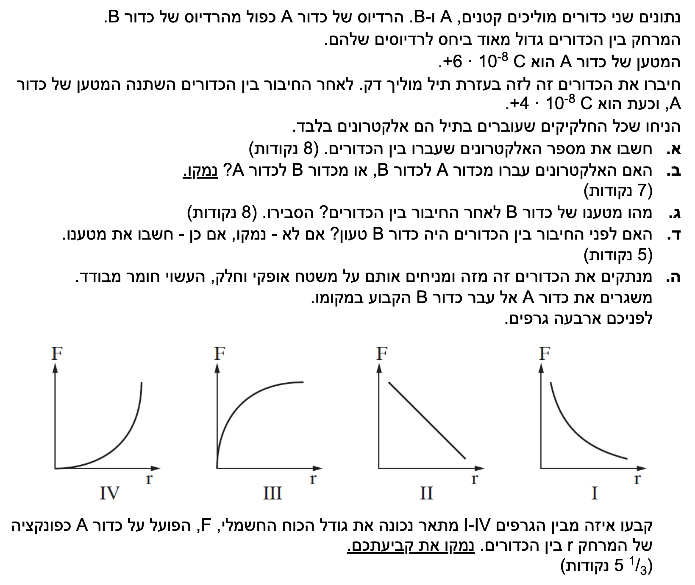

פתרון מלא, מוסבר ומונגש צעד אחר צעד
בשאלה זו אנו עוסקים בשני כדורים מוליכים שמתחברים בעזרת תיל דק. לפני שנתחיל לפתור, חשוב לזכור עיקרון פיזיקלי מרכזי: כאשר אנו מחברים שני גופים מוליכים, מטענים ינועו ביניהם עד שהפוטנציאל החשמלי של שניהם ישתווה.
כמו כן, זכרו שחלקיקים חיוביים (פרוטונים) מקובעים בגרעין האטום, ולכן רק האלקטרונים (בעלי המטען השלילי) הם אלו שיכולים לעבור בתיל!

בשאלה נכתב שהמרחק בין הכדורים גדול מאוד יחסית לרדיוסים שלהם. תהיתם פעם מדוע טורחים לציין זאת? הסיבה היא למנוע קיטוב (השראה אלקטרוסטטית). אם הכדורים היו קרובים, המטען על כדור אחד היה דוחה או מושך את המטענים שעל הכדור השני, ופיזור המטען על פני הכדורים לא היה אחיד. במצב כזה, הנוסחאות הפשוטות של פוטנציאל אלקטרוסטטי (שנשתמש בהן בסעיפים הבאים) פשוט לא היו תקפות! המרחק הגדול מבטיח שנוכל להתייחס לכל כדור כאילו הוא מבודד לחלוטין במרחב והמטען עליו מפולג באחידות.
ככלל, כשאתם קוראים בבחינה משפטים כמו "ניתן להזניח את החיכוך", "החוט והגלגלת חסרי מסה", "הגוף נקודתי", או "התיל/מד-הזרם אידיאלי" – דעו שמדובר בהנחות מפשטות. במציאות דברים אלו תמיד משפיעים מעט, אך ההנחות הללו באות "לנקות" את הבעיה כדי להקל עלינו לפתור אותה מתמטית ולהתמקד רק בעיקרון הפיזיקלי המרכזי שרוצים לבחון.
עקרון קוונטיזציית המטען (מטען חשמלי הוא תמיד כפולה שלמה של מטען האלקטרון).
ראשית, נגדיר משוואות עזר לחישוב השינוי במטען ולקשר שלו למספר האלקטרונים:
נחשב כעת את השינוי במטען של כדור A:
השינוי במטען הוא שלילי, כלומר כדור A קיבל מטען שלילי (אלקטרונים). נחשב את מספר האלקטרונים \( N \) על ידי חלוקת השינוי במטען הכולל במטענו של אלקטרון יחיד:
מסקנה: מספר האלקטרונים שעברו הוא \( 1.25 \cdot 10^{11} \) אלקטרונים.
האלקטרונים הם בעלי מטען חשמלי שלילי. כאשר גוף מאבד אלקטרונים, מטענו הופך לחיובי יותר. כאשר גוף מקבל אלקטרונים, מטענו הופך לשלילי יותר (או פחות חיובי).
מכיוון שמטענו של כדור A קטן מגודל של \( +6 \cdot 10^{-8} \text{ C} \) לגודל של \( +4 \cdot 10^{-8} \text{ C} \), נוכל להסיק שהמטען נטו שהתווסף אליו הוא שלילי (כפי שחישבנו, \( -2 \cdot 10^{-8} \text{ C} \)). מכאן שכדור A "התעשר" באלקטרונים במהלך החיבור. כדי שכדור A יקבל אלקטרונים, הם חייבים היו להגיע מהגוף שאליו הוא חובר.
מסקנה: האלקטרונים עברו מכדור B לכדור A.
תלמידים רבים שואלים: למה כשמחברים שני כדורים מוליכים, המטענים לא פשוט מתחלקים שווה בשווה? התשובה נמצאת במושג הפוטנציאל החשמלי.
פוטנציאל חשמלי אנלוגי לגובה (פוטנציאל כבידה). כשם שמסה (כמו כדור כבד) תמיד תשאף להתגלגל במורד הר מנקודה גבוהה לנקודה נמוכה, כך מטענים חיוביים תמיד "ישאפו" לרדת במורד הפוטנציאל (מפוטנציאל גבוה לנמוך). האלקטרונים (שהם אלו שנעים בפועל במוליך) הם שליליים, ולכן ינועו בכיוון ההפוך - מפוטנציאל נמוך לגבוה.
אפשר לחשוב על זה כמו על שני מכלי מים ברוחבים שונים המחוברים בצינור בתחתיתם (חוק הכלים השלובים). מים יזרמו מהמכל שבו מפלס הנוזל (הפוטנציאל) גבוה יותר, אל המכל שבו המפלס נמוך יותר. הזרימה תיפסק אך ורק כאשר גובה פני המים ישתווה בשני המכלים, ולא כאשר תהיה בהם אותה כמות מים (מטען). בגלל זה, מכל רחב יותר (כדור בעל רדיוס גדול) יאגור הרבה יותר מים (מטען) כשהמערכת תגיע לשיווי משקל!
עקרון שוויון פוטנציאלים: מוליכים המחוברים זה לזה בתיל יגיעו בסוף התהליך לאותו פוטנציאל אלקטרוסטטי.
\( V = k \frac{q}{r} \)לאחר החיבור, הפוטנציאלים של שני הכדורים משתווים (על סמך העיקרון, \( V_{A,f} = V_{B,f} \)). נציב את נוסחת הפוטנציאל למטען כדורי ונשווה:
ניתן לצמצם את קבוע קולון (\( k \)) משני אגפי המשוואה. נציב את הקשר בין הרדיוסים \( R_A = 2R_B \):
נצמצם את \( R_B \) ונחלץ את מטענו של כדור B:
מסקנה: מטענו של כדור B לאחר החיבור הוא \( q_{B,f} = 2 \cdot 10^{-8} \text{ C} \).
חוק שימור המטען: במערכת סגורה (מבודדת), סכום המטענים החשמליים הכולל לפני התהליך שווה לסכום המטענים לאחריו.
מתוך חוק שימור המטען (כלומר, \( \Sigma q_{i} = \Sigma q_{f} \)), אנו מרכיבים את המשוואה עבור המערכת שלנו:
נציב את הנתונים שלנו במשוואה זו כדי לחלץ את מטענו ההתחלתי של כדור B:
מסקנה: כדור B לא היה טעון לפני החיבור (\( q_{B,i} = 0 \)).
על פי חוק קולון, גודל הכוח החשמלי נמצא ביחס הפוך לריבוע המרחק בין הכדורים (\( F \propto \frac{1}{r^2} \)). ככל שהמרחק \( r \) גדל, הכוח \( F \) שואף לאפס אסימפטוטית. ככל ש-\( r \) קטן, הכוח גדל מאוד.
מסקנה: הגרף המתאר נכונה את הכוח הוא גרף I.